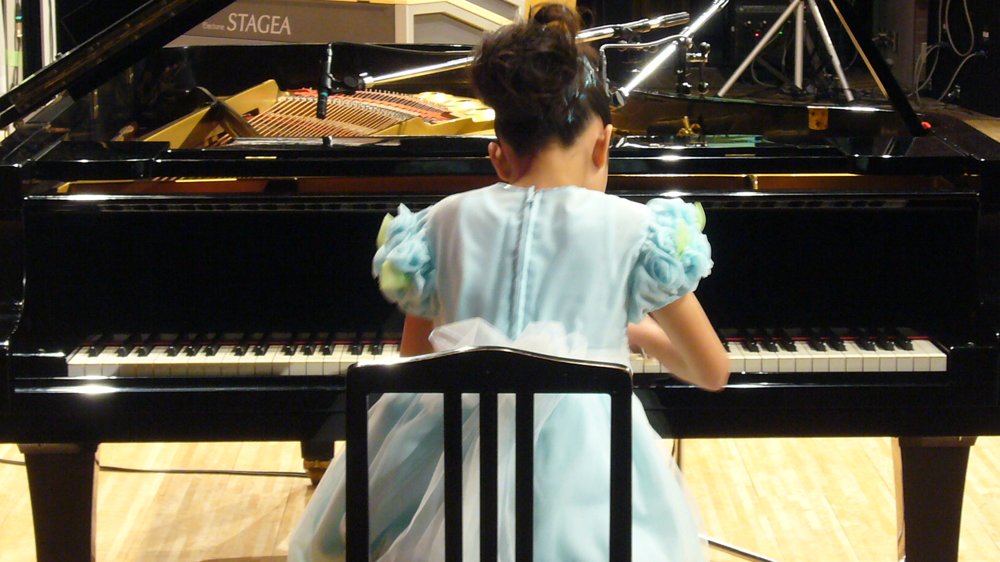
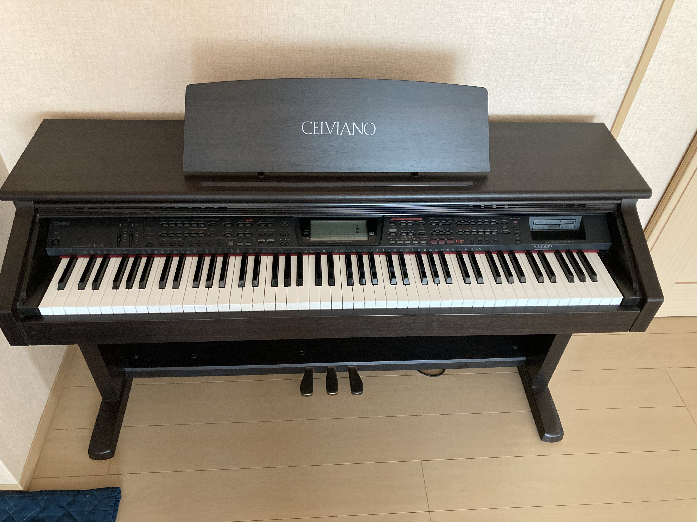
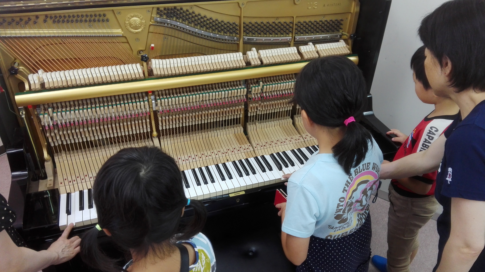
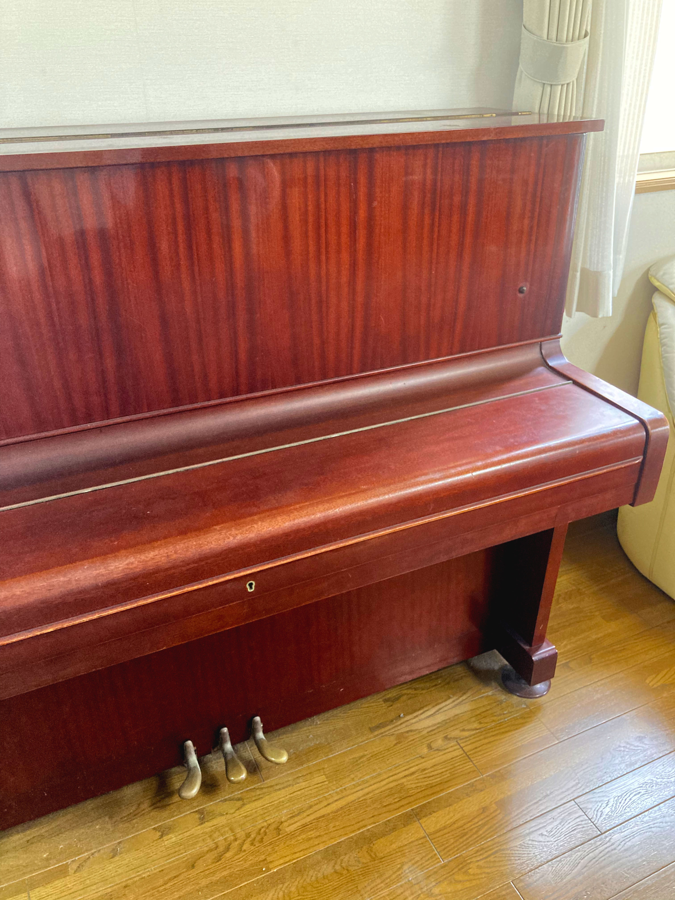
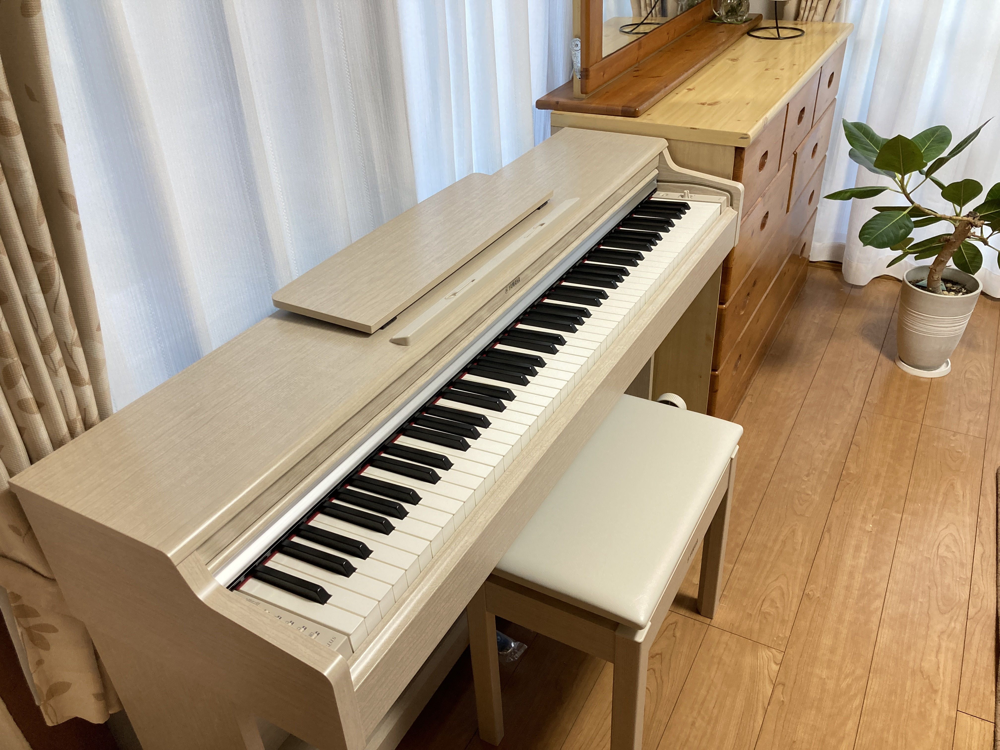
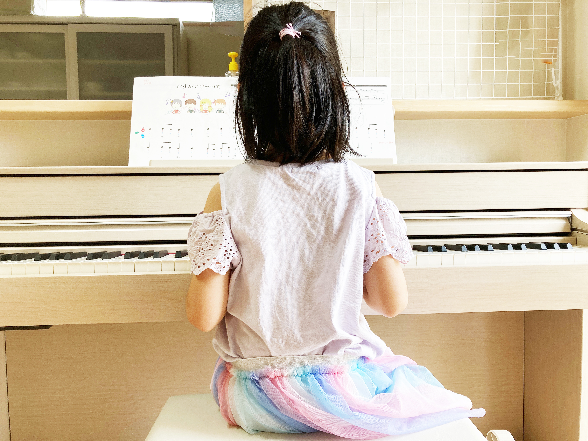
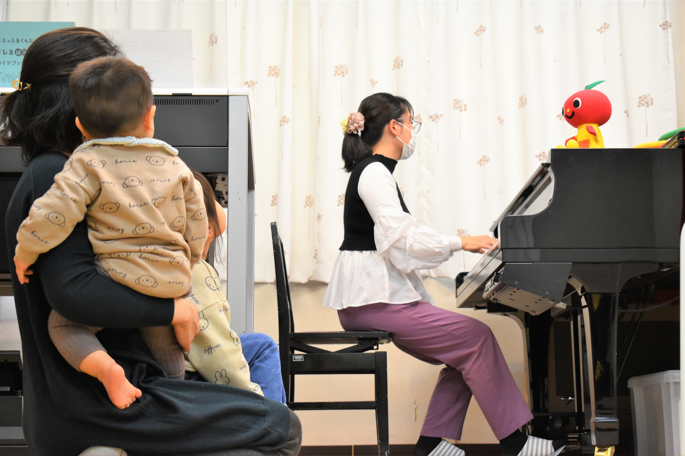

子どものピアノ、電子ピアノ？
それともアコースティック？
〜迷っているパパママが「後悔しない選び方」をするための話〜
最初にお伝えしたいこと
みんな同じことで悩んでいます
- 「電子ピアノとアコースティック、どっちがいいの？」
- 「電子じゃダメ」 vs 「本物じゃないと意味がない」
- よくある結論： 「家庭に合うものを選びましょう」
- → 正しいけれど、これだけでは判断材料が足りません。

なぜ選ぶのが難しいのか？
本日のゴール：
「納得して選べる考え方」が整理できること。それには、まずピアノの歴史から聞いてください
ピアノ 300年の歴史
誕生： 約300年前（イタリア）
革新： 「弦をハンマーで叩く」
可能になったこと： 強弱による繊細な表現
それまでこんな鍵盤楽器はありませんでした。多彩な表現力。これがピアノ最大の特徴です。

縦型ピアノ（アップライト）の台頭
初期： すべてグランドピアノ型
解決策： アップライトの誕生
（グランドを「縦」にした構造）
理由：グランドピアノは場所をとるから。
奥行きの面積を、ピアノを縦に起こすことで狭くできたんです。
ただし：便利になると、必ず何かが失われます。

アップライトで「失われたもの」
| 特徴 | グランドピアノ | アップライト |
|---|---|---|
| 連打能力 | 1秒間に16回 | 1秒間に7〜8回 |
| 音の方向 | 奏者の前（開放） | 壁側（閉鎖） |
| 表現力 | 最大限 | 制限あり |
スペースを手にした代わりに、表現力に制限がかかってしまいました。これは現代まで尾を引いています。
電子ピアノの台頭（歴史は繰り返す）
生ピアノの「弱点」を解決する4つの目的

では、電子ピアノは何を引き換えにしたのでしょう？
電子ピアノの魅力
| 項目 | アコースティック | 電子ピアノ |
| 価格 | 高い | 安い |
| 音量 | 大きい | ヘッドホン可 |
ピアノ販売台数の
約8割が電子ピアノ
いまや世間では、ピアノといえば、「電子ピアノ」を指すみたいです。
では、アコースティックの意味は？
絵の具の色数に例えると：同じ「青」でも・・・
単純に「青」と言っても、スカイブルーも、群青色も、パーリー色もありますね。アコースティックピアノは、色の種類が多彩で複雑な絵の具とパレットのようなもの。
単に音が出るだけでなく、「どんな音色で、どんな響きを作るか」を
指先でコントロールする喜びとクリエイティブな面白さがあります。
重要：買い替えについて
「上手になってから」の落とし穴
本物の響きを知る能力は「耳」の成長と同時期です。3歳ごろから急成長しだし、それが一生の財産になります。

電子ピアノが「ダメ」なのではない
「音感」「リズム」「譜読み」
「音楽の基礎」を身につけるための
非常に優れたパートナーです。
「どこまでの音楽体験を望むか」
判断の基準は、ご家庭が描く「理想の姿」にあります。
電子ピアノが向いている家庭
✔ 音の心配（ヘッドホン必須）
✔ 予算をスマートに抑えたい
✔ 多機能（録音など）を楽しみたい

アコースティックが向いている家庭
✔ 本格的な音色を体験させたい
✔ 長期的な資産として考えたい
✔ 芸術的な感性を育てたい
最も簡単な決め方

プロ（先生）に相談する
お子さんの将来性を一番近くで見ているのは先生です。予算を含めて率直に話してみましょう。
知っておいてほしい現実
ピアノは長く寄り添うものです。
楽器選びは、家族の歩み方を決める大切な第一歩。
最後に考えてみてください
「楽しみ」を増やす？
「感性」を深める？
どちらも素晴らしい選択肢です。